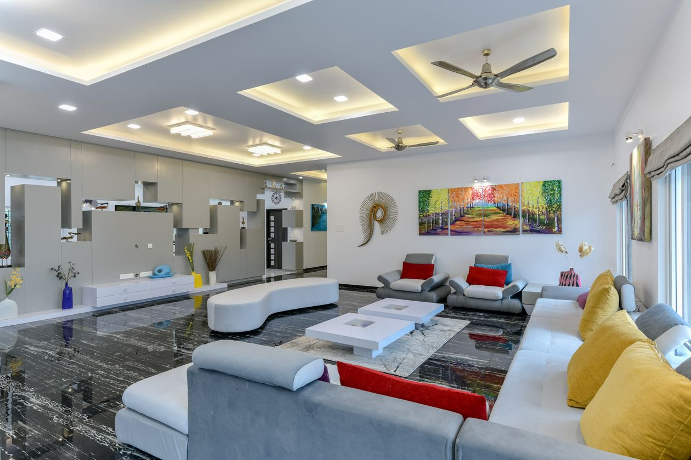

Whitefield, Bengaluru — the kitchen that stayed put
Plan 3BHK · 1,640 sq ftFacing NorthConflicts 2Demolition NoneFee ₹7,500 + ₹3,000 visit = ₹10,500
- The ask
- A couple in a finished flat — granite down, plumbing done — had been told the kitchen, standing in the north-east, would have to be rebuilt in the south-east. They wanted a second reading before spending on a kitchen they had just paid for.
- What the reading did
- The kitchen's position was a true conflict and an immovable one, and the report said both things. The reading worked around it: the stove was turned within the kitchen so the cook faces east, the pooja cabinet came off the south wall to the east wall, where it also serves, and the north-east corner was kept light — no storage tower, no water purifier bank standing in it.
- What the client declined
- Swapping the master bedroom (west — also serves) with the guest room (south-west). The guest room was the father's, and he was not to be moved. The report recorded the decline in one line and suggested nothing further. That was fine.
- The outcome
- Two furniture-level changes and one turned stove. The kitchen stayed exactly where it was built, and the report says so on its first page.